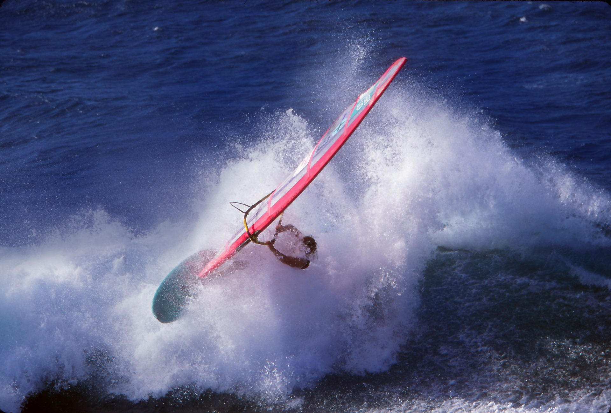
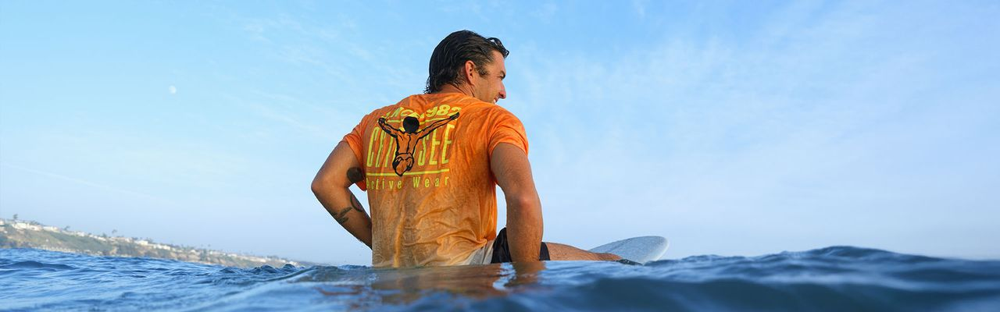

Über Chiemsee
Seit 1982 am Wasser.
Anfang der Achtziger, Bayern, Chiemsee. Zwei Brüder entdecken das Windsurfen und mit ihm eine neue Haltung. Aus einer Surfschule am Ufer wird eine Marke. Der springende Windsurfer, der Jumper, wird ihr Zeichen.
In den Neunzigern trägt halb Deutschland Chiemsee. Auf dem Wasser, auf dem Brett, in der Stadt. Neonfarben, große Prints, eine Kultur aus Surfern, Snowboardern und Leuten, die einfach draußen sein wollen.
Heute
Chiemsee ist eine Marke für alle, die ihren Sommer nicht enden lassen wollen. Sweatshirts und Fleece für den See im Herbst, Skibekleidung für den Berg, Bademode für den ersten warmen Tag. Entworfen in Deutschland, getragen überall dort, wo Wasser ist.
Verantwortung
Mit der Linie „MBRC the Ocean“ unterstützt Chiemsee Projekte gegen Plastik im Meer. Der Spielplatz der Marke ist das Wasser. Es sauber zu halten ist kein Zusatz, sondern Teil der Arbeit.

Join the Ride
Parallel zum Shop entsteht mit „Chiemsee × Join the Ride“ eine neue Kollektion, die die Marke zurück in die Kultur bringt. Wer sehen will, wohin die Reise geht: chiemsee-jtr.pages.dev.